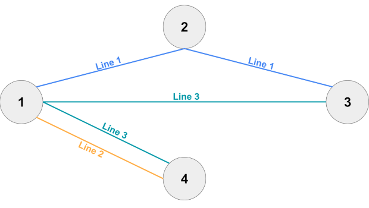
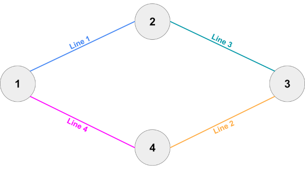
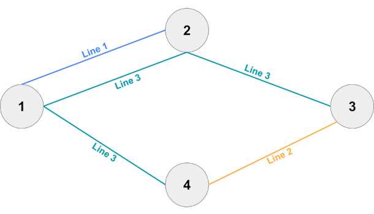

You are in charge of the maintenance of a railroad network. The network consists of $$$\mathbf{N}$$$ stations and $$$\mathbf{L}$$$ train lines. Each train line serves a fixed list of stations bidirectionally (trains turn around in the first and last stations of the list). Transfers from one line to another in a station are possible, which means a trip in the network from station $$$a$$$ to station $$$b$$$ is possible if there is a list of train lines such that the first one serves station $$$a$$$, the last one serves station $$$b$$$, and for any consecutive pair of train lines in the list there is at least one station that they both serve.
The easiest way to do maintenance is to shut down entire lines, one at a time. However, some train lines may be essential. A train line is essential if removing it would make at least one trip between a pair of stations not possible.
Given the list of existing train lines, calculate how many of them are essential.
The first line of the input gives the number of test cases, $$$\mathbf{T}$$$. $$$\mathbf{T}$$$ test cases follow. Each test case starts with a line containing two integers $$$\mathbf{N}$$$ and $$$\mathbf{L}$$$: the number of stations and train lines in the network. Then, $$$\mathbf{L}$$$ groups of 2 lines follow. The first line of the $$$i$$$-th group contains a single integer $$$\mathbf{K_i}$$$ the number of stations served by the $$$i$$$-th train line. The second line of the $$$i$$$-th group contains $$$\mathbf{K_i}$$$ integers $$$\mathbf{S_{i,1}}, \mathbf{S_{i,2}}, \dots, \mathbf{S_{i,{K_i}}}$$$ representing the stations served by the $$$i$$$-th train line.
For each test case, output one line containing Case #$$$x$$$: $$$y$$$,
where $$$x$$$ is the test case number (starting from 1) and $$$y$$$ is the number of train
lines that are essential.
Time limit: 40 seconds.
Memory limit: 2 GB.
$$$1 \le \mathbf{T} \le 100$$$.
$$$2 \le \mathbf{K_i} \le \mathbf{N}$$$ for all $$$i$$$.
$$$1 \le \mathbf{S_{i,j}} \le \mathbf{N}$$$, for all $$$i, j$$$.
$$$\mathbf{S_{i,j}} \ne \mathbf{S_{i,j'}}$$$, for all $$$i, j, j'$$$ such that $$$j \ne j'$$$ (Each train
line serves a station at most once).
The trip between all pairs of stations is possible as per the definition above
when no train line is shut down.
$$$2 \le \mathbf{N} \le 100$$$.
$$$1 \le \mathbf{L} \le 100$$$.
$$$\mathbf{K_1} + \mathbf{K_2} + \cdots + \mathbf{K_L} \le 200$$$.
$$$2 \le \mathbf{N} \le 10^5$$$.
$$$1 \le \mathbf{L} \le 10^5$$$.
$$$\mathbf{K_1} + \mathbf{K_2} + \cdots + \mathbf{K_L} \le 2 \times 10^5$$$.
4 4 3 3 1 2 3 2 1 4 3 4 1 3 4 4 2 1 2 2 3 4 2 3 2 2 4 1 4 3 2 1 2 2 3 4 2 3 2 4 3 2 1 2 2 3 4 4 4 1 2 3
Case #1: 1 Case #2: 0 Case #3: 3 Case #4: 1
In Sample Case #1, the first train line is essential because it is the only one serving station $$$2$$$. Since shutting any other line down would not make travel between at least one pair of stations impossible, they are not essential.

In Sample Case #2, no line is essential.

Sample Case #3 is similar to Sample Case #2, but missing the last train line. That makes all remaining train lines essential.
In Sample Case #4, the last train line is essential as there is no way to go from station $$$1$$$ to station $$$4$$$ without it. As in Sample Case #1, since this train line already connects every station, no other line is essential.
